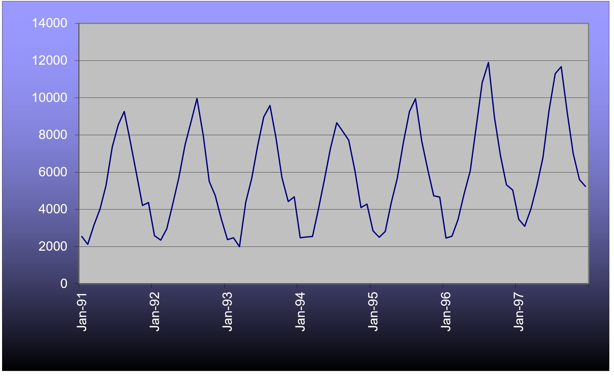

Example of an autoregression model with Box-Cox transformation
# Introduction
The following example was developed from the same original data used in NCHRP Report 765 that was first published by Savage (1997). The example in this section goes beyond what is contained in NCHRP Report 765 by using more years of data and including an optional Box-Cox transformation within the autoregression. This example was developed entirely within Excel using its Analysis ToolPak. This section illustrates the most sophisticated analysis that can be accomplished within these guidelines.
# Data
Table 1 shows monthly ferry ridership counts over a six year period of time.
Table 1 Ferry Traffic Count Data (Savage, 1997)
| Month | Year 1 | Year 2 | Year 3 | Year 4 | Year 5 | Year 6 |
|---|---|---|---|---|---|---|
| January | 2593 | 2374 | 2469 | 2848 | 2465 | 3464 |
| February | 2345 | 2474 | 2513 | 2502 | 2555 | 3095 |
| March | 2948 | 2000 | 2546 | 2814 | 3446 | 4035 |
| April | 4282 | 4387 | 4035 | 4350 | 4797 | 5295 |
| May | 5744 | 5668 | 5612 | 5656 | 6059 | 6790 |
| June | 7449 | 7441 | 7283 | 7623 | 8440 | 9286 |
| July | 8706 | 8971 | 8659 | 9263 | 10819 | 11294 |
| August | 9966 | 9588 | 8200 | 9949 | 11904 | 11672 |
| September | 7982 | 7848 | 7713 | 7680 | 8949 | 9221 |
| October | 5507 | 5703 | 6072 | 6147 | 6896 | 7000 |
| November | 4744 | 4428 | 4095 | 4737 | 5322 | 5605 |
| December | 3500 | 4673 | 4288 | 4665 | 5040 | 5241 |
Visual observations of the time series would suggest that there is a yearly cycle to the data and that the variation within a year is growing slowly over time. These observations imply that an autoregressive model would need at least two lag terms and that there might be some advantage to a Box-Cox transformation.

# Transformations
The count data series is divided into thirds (two full years in each), transformed, and checked for similarity of standard deviations. Table 2 shows the results of five different values of β (1.0, 0.8, 0.5, 0.3, 0.0). For example, the transformation for a value of β = 0.5 for the very first month (January of Year 1) is accomplished by this calculation:
And the transformation for a value of β = 1 for this same month is:
Notice that the standard deviations between values of β are quite different from each other, since the data series transformations are quite different from each other.
Table 2 Standard Deviations of the Count Data Series Transformations
| β | 1 | 0.8 | 0.5 | 0.3 | 0 |
|---|---|---|---|---|---|
| Early Third | 2446 | 438.5 | 33.74 | 6.160 | 0.4874 |
| Middle Third | 2306 | 413.0 | 31.66 | 5.755 | 0.4514 |
| Late Third | 2896 | 497.5 | 35.91 | 6.284 | 0.4667 |
The most consistent standard deviations occur with a value of β = 0.3, but none of the inconstancies are obviously bad to the point where they will distort the forecast. The use of a Box-Cox transformation could be bypassed for these data; however, a transformation with a value of β = 0.3 will be continued throughout this example in order to further illustrate the concept.
# Analysis
Table 3 lists the autocorrelations for the transformed counts at the first 14 lags. A single lag is a one month offset. The autocorrelations confirm what can be gleaned from graph of counts. The highest autocorrelation is with lag 12 (exactly one full year earlier) with fairly strong autocorrelations also at lags 11 and 13. There is a strong autocorrelation at lag 1, as is typical of count data, and there is another strong, but negative, autocorrelation at lag 6. The reasons for these autocorrelations seem fairly obvious. The graph does not suggest a need to do smoothing, so there are only a few possibilities for sets of independent variables in an AR model, such as:
- AR(1) with a lag at 1;
- AR(1) with a lag at 12;
- AR(2) with lags at 1 and 12;
- AR(3) with lags at 1, 12 and either 11 or 13;
- AR(2) with lags at 1 and 6.
Table 3 Autocorrelations of the Transformed Counts through the First 14 Lags
| Lag | Autocorrelation |
|---|---|
| 1 | 0.8379 |
| 2 | 0.4977 |
| 3 | 0.0443 |
| 4 | -0.3923 |
| 5 | -0.7383 |
| 6 | -0.8789 |
| 7 | -0.7546 |
| 8 | -0.4006 |
| 9 | 0.0347 |
| 10 | 0.4905 |
| 11 | 0.8225 |
| 12 | 0.9759 |
| 13 | 0.8314 |
| 14 | 0.4853 |
Using the lag at 6 might be OK empirically, but it has a dubious interpretation. It does not seem reasonable that high peaks in the summer should be a good indicator of low valleys in the winter or vice versa, since the natures of traffic at these times of year are likely quite different. It is much more reasonable to suggest that peaks indicate peaks and valleys indicate valleys. So the AR(2) model with lags at 1 and 6 is discarded on logical grounds. Here are the results of the remaining linear regressions: two AR(1) models an AR(2) model and an AR(3) model.
Tn=7.198+0.8259Tn-1
(Adjusted R-square = 0.697677)
Tn=1.205+0.9855Tn-12
(Adjusted R-square = 0.951588)
Tn=0.5443+0.09445Tn-1+0.9062Tn-12
(Adjusted R-square = 0.953712)
Tn=0.8479+0.27214Tn-1+0.9130Tn-12-0.1940Tn-13
(Adjusted R-square = 0.954200)
All the lag terms are statistically significant except for the lag at 13 in the AR(3) model. Not only is that term insignificant, but it also has the wrong sign. Thus, the AR(3) model can be discarded. The AR(1) model with a lag of 1 has inferior goodness-of-fit as indicated by the R-square, so it can be discarded, too. Lastly, the AR(2) model with lags at 1 and 12 has a slightly superior R-square to the AR(1) model with a lag at 12, only. The AR(2) model (with lags at 1 and 12) will be selected for forecasting. Figure 2 shows the output from Excel’s regression tool. The t-statistics shows that the lag at 1 is significant at the 90% confidence level, but the lag at 12 is significant well beyond the 95% level. The model is judged to be suitable for short-range forecasting.

Figure 2 Output from Excel’s Regression Tool for an AR(2) Model of Ferry Traffic with Lags at 1 and 12
Determining the standard error first requires finding the residuals in the original units, vehicles. This requires estimating the whole time series, as transformed, then inversing the transformation for those estimates for all periods with data. For example, the forecast for the last (most recent) month, December of Year 6, is 40.383, which is:
T=(1+0.3T0.3 )^1⁄0.3^=(1+0.3*40.383)^1⁄0.3^=5320 vehicles
The traffic count for that same month was 5241 vehicles, so the residual is (5241-5320) = 79 vehicles. The population standard deviation of all the residuals is 554 vehicles, which is very close to the standard error of the estimate of 569 vehicles. A spot check of the all residuals indicates that the model is doing a good job at matching the cyclic pattern in the data and that the model is not biased with respect to time.
Just as a validity check, a similar AR(2) model can be easily estimated on the original, untransformed, data. The estimated equation is:
Tn=67.01+0.09360Tn-1+0.9384Tn-12
(Adjusted R-square = 0.954543)
with a standard error of the estimate of 569 vehicles, obtained directly from the output of the regression analysis. The transformed and untransformed AR(2) models are nearly identical, except for the constant term.
In order to forecast with the transformed AR(2) model, it is necessary to forecast all time periods beyond the end of the data until the forecast period is reached. So, for example, if a forecast is desired for December of Year 8, there is also a need for forecasts for November of Year 8 and December of Year 7. Similar logic applies to all earlier time periods. The earliest forecasted time periods can use some real data for independent variables, but eventually all independent variables are forecasts, themselves.
Table 4 shows all the transformed data necessary to forecast December of Year 8. The columns for Year 7 and Year 8 are all forecasts. There is no need for any real data prior to Year 6, because the largest lag is 12 months.
Table 4 Transformed Data for Year 6 and Transformed Forecasts for Years 7 and 8
| Month | Year 6 | Year 7 | Year 8 |
|---|---|---|---|
| January | 35.1039 | 36.1525 | 37.1732 |
| February | 33.8268 | 34.6139 | 35.4237 |
| March | 36.9042 | 37.2576 | 37.6542 |
| April | 40.3221 | 40.6047 | 40.8982 |
| May | 43.7037 | 43.9853 | 44.2682 |
| June | 48.3353 | 48.5020 | 48.6797 |
| Jul | 51.4607 | 51.7609 | 52.0497 |
| August | 52.0045 | 52.5615 | 53.0936 |
| September | 48.2266 | 49.2134 | 50.1580 |
| October | 44.1355 | 45.1897 | 46.2342 |
| November | 41.0737 | 42.0349 | 43.0047 |
| December | 40.1881 | 40.9344 | 41.7023 |
The forecast for December of Year 8 was accomplished by this calculation:
Tn=0.5443+0.09445*43.0047+0.9062*40.9344=41.7023
And applying an inverse transformation to this transformed forecast gives a result of 5874 vehicles. The 50% confidence interval for this forecast is:
E50=±0.6745*569=±384